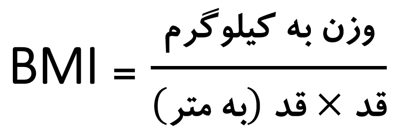
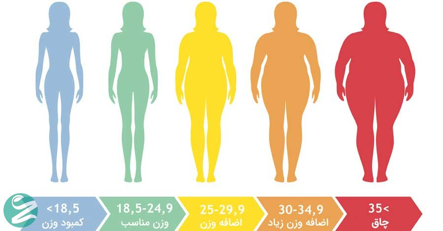

همه چیز درباره شاخص توده بدنی، BMI چیست؟
شاخص توده بدنی یا شاخص کوتله یا بی ام آی BMI (body mass index) سنجشی آماری برای مقایسه وزن و قد یک فرد است. در واقع BMI سنجش میزان چاقی را اندازه گیری نمیکند بلکه ابزاری مناسب است تا سلامت وزن فرد با توجه به قدش تخمین زده شود. در این مطلب در مورد BMI و روش های محاسبه وزن ایده آل نکاتی بیان می شود.
شاخص توده بدنی (BMI) چیست؟
شاخص توده بدنی BMI مقیاسی برای اندازه گیری میزان چربی بدن و تناسب اندام بر اساس نسبت وزن به قد فرد است. این شاخص از طریق حاصل تقسیم وزن بر مجذور قد فرد محاسبه میشود و برای افراد بالای 20 سال چه خانم چه آقا درست کار میکند و اعداد متوسط این شاخص برای کودکان بالای دو سال متفاوت است.
فرمول محسابه BMI
شاخص توده بدنی از طریق تقسیم وزن فرد به کیلوگرم بر توان دوم (x²) قدش به متر بدست می آید.
فرمول BMI = (وزن بر حسب کیلوگرم) تقسیم بر (قد × قد بر حسب متر) یا به توان 2
این شاخص در بین سالهای 1830 تا 18520 توسط آدولف کوتله دانشمند بلژیکی ابداع شد به همین دلیل به آن شاخص کوتله نیز میگویند. طریقه محاسبه آن بسیار ساده است. کافی است قد و وزن خود را در فرمول بالا قرار دهید.
جدول شاخص توده بدنی (BMI)
| رده | حدود شاخص جرم بدن - kg/m2 |
| دچار کمبود وزن شدید | کمتر از 16.5 |
| کمبود وزن | از 16.5 تا 18.5 |
| عادی | از 18.5 تا 25 |
| اضافه وزن | از 25 تا 30 |
| چاقی کلاس 1 | از 30 تا 35 |
| چاقی کلاس 2 | از 35 تا 40 |
| چاقی کلاس 3 | بیش از40 |
BMI مناسب گروه های سنی مختلف
- 19-24 سال = 22
- 25-34 سال = 23
- 35-44 سال = 24
- 45-54 سال = 25
- 55-64 سال = 26
- 65 سال به بالا = 27

BMI بزرگسالان
از آنجا که انسان ها در قد و شکل بدن متفاوت هستند، BMI هم وزن طبیعی را نسبت به قد نشان می دهد. BMI بالاتر از حد طبیعی در بزرگسالان، نشان می دهد که سنگین تر از وزن ایده آل هستید. محدوده زیر حد طبیعی فقط برای بزرگسالان حساب می شود.
BMI زیر 18.5:
- پایین تر از این حد به این معناست که فرد کمبود وزن دارد.
- دلایل زیادی برای این نتیجه می تواند وجود داشته باشد.
- این افراد باید به دنبال افزایش وزن باشند تا سلامت خود را به دست بیاورند.
BMI زیر 18.5:
- این محدوده ی وزن مناسب است.
- اگر برای شما در این محدوده است، یعنی نسبت به قدتان وزن مناسبی دارید.
- به هر حال این افراد هم باید برنامه غذایی سالم به همراه فعالیت بدنی مرتب را دنبال کنند تا هم اندامی متناسب داشته باشند و هم وزنشان از حد طبیعی بالاتر یا پایین تر نیایید.
BMI 25 یا بیشتر:
- این اندازه بیش از حد ایده آل است و ممکن است فرد اضافه وزن داشته باشد، یعنی نسبت به قدتان سنگین تر هستید.
- اضافه وزن، شما را در خطر بیماری های قلبی، سکته مغزی و دیابت نوع 2 قرار می دهد.
- وقت آن رسیده که واکنش نشان دهید و برنامه غذایی و ورزشی را شروع کنید.
BMI 30 به بالا:
- این اندازه در بالاترین حد است و چاقی نام دارد.
- چاقی، فرد را در خطر بسیاری از بیماری ها قرار می دهد.
- کاهش وزن خیلی سریع تاثیر مثبت خود روی سلامت این افراد نشان می دهد.
BMI کودکان
همانطور که گفتیم BMI برای کودکان به شکل دیگری محاسبه میشود هرچند روش کار برای آنها نیز تقریبا مشابه بزرگسالان است اما برای کودکان درصدی را برای مقایسه کودک با کودکان هم سن و هم جنسیت او فراهم میکند. برای ارزیابی وزن مناسب در کودکان، متخصصان به قد، سن و جنسیت کودک توجه میکنند.
متخصص با استفاده از آن میتواند به شما بگوید کودک آنطور که انتظار می رفته است رشد کرده یا خیر. وقتی صدک BMI کودک
مشخص میشود در یکی از این چهار گروه قرار میگیرد:
کمبود وزن: زیر صدک 2
وزن سلامت: بین صدک 2 و 90
اضافه وزن: بین صدک 91 و 97
چاق: روی صدک 98 یا بالاتر از آن، بیشتر کودکان باید روی وزن ایده آل قرار داشته باشند.
اما اگر کودک بالاتر از محدوده طبیعی باشد، باید زیر نظر قرار بگیرد تا به وزن ایده آل برسد.
اضافه وزن مشکلاتی را برای سلامت کودک به وجود می آورد. تحقیقات نشان داده کودکان دارای اضافه وزن یا چاق در دوران
کودکی و بعدها، دست به گریبان بیماری های مربوط به چاقی هستند. پس اگر کودکی با چنین مشکلی دارید بهتر است هرچه
زودتر اقدام کنید.
وزن ایده آل چقدر است؟
مطمئنا هر از گاهی به وزن خود فکر می کنید و عدد آن برایتان مهم است. وزن ایده آل به عوامل مختلفی بستگی دارد، از جمله:
- قد
- جنسیت
- میزان چربی و عضلات
- اندازه چارچوب بدن
شاخص توده بدنی BMI یکی از بهترین روش ها برای محاسبه وزن ایده آل است. محاسبه BMI کار بسیار ساده ای است و با
دانستن اندازه قد و وزن می توان آن را محاسبه کرد.
اگر نتیجه بین 18.5 و 24.9 باشد، یعنی وزن شما نسبت به قدتان ایده آل است. اگر نتیجه به دست آمده کمتر از 18.5 باشد،
باشد، دچار کمبود وزن هستید. اگر شاخص توده بدن شما بین 25 و 29.9 باشد، دچار اضافه وزن هستید. اگر عدد به دست آمده
بین 30 تا 35 باشد، اضافه وزن شما بیش از اندازه بوده و چاق محسوب می شوید.
تاثیرات اضافه وزن و چاقی بر سلامت
طیف های مختلف BMI بر اساس رابطه بین وزن بدن و بیماریها و مرگ تعیین شده است. افراد دارای اضافه وزن یا چاق بیشتر به بیماری های مختلف و مشکلات سلامتی مبتلا میشوند که از جمله آنها میتوان به موارد زیر اشاره کرد:
- فشار خون بالا
- دیابت نوع 2
- سکته
- آرتروز استخوانی
- چربی خون بالا
- بیماری های قلبی عروقی
- بیماری کیسه صفرا
- اختلالات خواب
- برخی از انواع بیماری سرطان (سینه، رحم، مقعد و ...)
فاکتورهای خطرزا
بیماری هایی که نام بردیم، از جمله بیماری های مرتبط با چاقی هستند در صورتی که اضافه وزن یا چاقی شما همراه با دست کم دو مورد از فاکتورهای خطرزا نیز همراه باشد، احتمال ابتلای شما به این بیماری ها بیشتر میشود. عوامل خطرزا عبارتند از:
- فشار خون بالا
- سطح بالای کلسترول بد در خون LDL
- چربی خون بالا ( تریگلیسیرید بالا)
- سطح پائین کلسترول خوب در خون HDL
- قند خون بالا
- سابقه خانوادگی بیماری قلبی
- عدم فعالیت بدنی و ورزش
- مصرف سیگار و الکل
برای افرادی که شاخص توده بدنی آنها 30 و بالاتر از آن است و یا کسانی که دچار اضافه وزن هستند و یک یا دو مورد از فاکتورهای خطر را دارند پیشنهاد میکنیم که وزن خود را کاهش دهند. حتی یک کاهش وزن جزئی (5 تا 10 درصد وزن فعلی شما) ریسک ابتلا به این قبیل از بیماریها را کاهش میدهد.
چه کسانی می توانند از BMI و صدک BMI استفاده کنند؟
- همانطور که گفته شد BMI بهترین راه ارزیابی وزن سلامت در بزرگسالان است.
- صدک BMI بهترین روش ارزیابی وزن مناسب در کودکان 2 سال به بالا است.
- بعضی افراد بزرگسال که بدنی عضلانی دارند ممکن است BMI بالاتر از حد سلامت داشته باشند.
- در حالی که چربی بسیاری کمی دارند ( مثلا یک بدنساز ).
- BMI این ورزشکار چاقی را نشان می دهد در حالی که چنین نیست، پس شاخص BMI برای همه کارایی ندارد.
شاخص توده بدنی همه کار کاربرد ندارد!
این شاخص ممکن است برای ورزشکاران و افرادی که بافت ماهیچهای مستحکم و متراکم دارند، با ضریب خطا همراه باشد و BMI
آنها را بیشتر از میزان واقعی نشان دهد زیرا اضافه وزنی را که به دلیل بافت ماهیچه ای به وجود آمده است را با چربی
اضافی بدن اشتباه میگیرد.
در مورد استفاده از این شاخص برای سالمندان نیز محدودیت هایی وجود دارد زیرا ممکن است در مورد اضافه وزن این افراد
را کمتر از حد واقعی نشان دهد.
محاسبه شاخص توده بدنی برای زنان باردار کاربردی نیست. در افراد بین 18 تا 20 سال باید از روش محاسبه شاخص توده بدنی
برای کودکان استفاده کرد تا اعداد به دست آمده واقعی باشند.